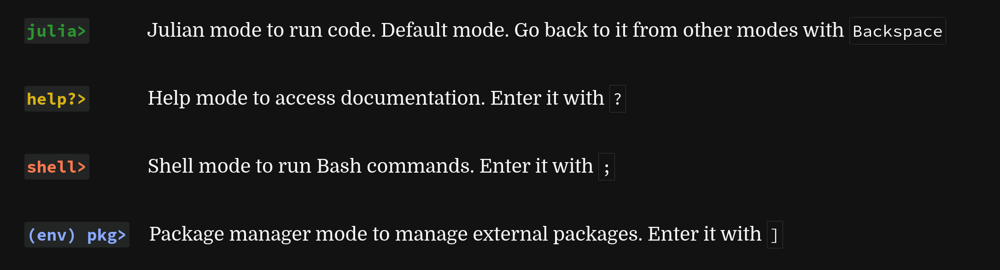

Introduction to the Julia language
The Julia programming language
- High-performance, dynamically typed programming language for scientific computing
- Uses just-in-time (JIT) compiler to compile all code, includes an interactive command line (REPL = read–eval–print loop, and can also be run in Jupyter), i.e. tries to combine the advantages of both compiled and interpreted languages
- Built-in package manager
- Lots of interesting design decisions, e.g. macros, support for Unicode, etc. — covered in our introductory Julia course
- Support for parallel and distributed computing via its Standard Library and many 3rd party packages
- being added along the way, e.g. @threads were first introduced in v0.5
- currently under active development, both in features and performance
Running Julia locally
If you have Julia installed on your own computer, you can run it there: on a multi-core laptop/desktop you can launch multiple threads and processes and run them in parallel.
If you would like to install Julia later on, you can find some information here.
Using Julia on supercomputers
Julia on Compute Canada production clusters
Julia is among hundreds of software packages installed on the CC clusters. To use Julia on one of them, you would load the following module:
$ module load juliaInstalling Julia packages on a production cluster
By default, all Julia packages you install from REPL will go into $HOME/.julia. If you want to put packages into another location, you will need to (1) install inside your Julia session with (from within Julia):
empty!(DEPOT_PATH)
push!(DEPOT_PATH,"/scratch/path/to/julia/packages")
] add BenchmarkToolsand (2) before running Julia modify two variables (from the command line):
$ module load julia
$ export JULIA_DEPOT_PATH=/home/\$USER/.julia:/scratch/path/to/julia/packages
$ export JULIA_LOAD_PATH=@:@v#.#:@stdlib:/scratch/path/to/julia/packagesDon’t do this on the training cluster! We already have everything installed in a central location for all guest accounts.
Some Julia packages rely on precompiled bits that developers think would work on all architectures, but they don’t. For example, Plots package comes with several precompiled libraries, it installs without problem on Compute Canada clusters, but then at runtime you will see an error about “GLIBC_2.18 not found”. The proper solution would be to recompile the package on the cluster, but it is not done correctly in Julia packaging, and the error persists even after “recompilation”. There is a solution for this, and you can always contact us at support@computecanada.ca and ask for help. Another example if Julia’s NetCDF package: it installs fine on Apple Silicon Macs, but it actually comes with a precompiled C package that was compiled only for Intel Macs and does not work on M1.
Julia on the training cluster for this workshop
We have Julia on our training cluster uu.c3.ca.
Our training cluster has:
- one login node with 16 “persistent” cores and 32GB of memory,
- 17 compute nodes with 16 “compute” cores and 60GB of memory (272 cores in total),
- one GPU node with 4 “compute” cores, 1 vGPU (8GB) and 22GB of memory.
In our introductory Julia course we use Julia inside a Jupyter notebook. Today we will be starting multiple threads and processes, with the eventual goal of running our workflows as batch jobs on an HPC cluster, so we’ll be using Julia from the command line.
Pause: We will now distribute accounts and passwords to connect to the cluster.
Normally, you would install Julia packages yourself. A typical package installation however takes several hundred MBs of RAM, a fairly long time, and creates many small files. Our training cluster runs on top of virtualized hardware with a shared filesystem. If several dozen workshop participants start installing packages at the same time, this will hammer the filesystem and will make it slow for all participants for quite a while.
Instead, for this workshop, you will run:
$ source /project/def-sponsor00/shared/julia/config/loadJulia.shThis script loads the Julia module and sets environment variables to point to a central environment in which we have pre-installed all the packages for this workshop.
Note that you can still install additional packages if you want. These will install in your own environment at ~/.julia.
Running Julia in the REPL
Where to run the REPL
You could now technically launch a Julia REPL (Read-Eval-Print-Loop). However, this would launch it on the login node and if everybody does this at the same time, we would probably stall our training cluster.
Instead, you will first launch an interactive job by running the Slurm command salloc:
$ salloc --mem-per-cpu=3600M --time=01:00:00This puts you on a compute node for up to one hour.
Now you can launch the Julia REPL and try to run a couple of commands:
$ julia
_
_ _ _(_)_ | Documentation: https://docs.julialang.org
(_) | (_) (_) |
_ _ _| |_ __ _ | Type "?" for help, "]?" for Pkg help.
| | | | | | |/ _` | |
| | |_| | | | (_| | | Version 1.7.0 (2021-11-30)
_/ |\__'_|_|_|\__'_| |
|__/ |
julia> using BenchmarkTools
julia> @btime sqrt(2)
1.825 ns (0 allocations: 0 bytes)
1.4142135623730951REPL modes
The Julia REPL has 4 modes:

(env is the name of your current project environment.)
REPL keybindings
In the REPL, you can use standard command line (Emacs) keybindings:
C-c cancel
C-d quit
C-l clear console
C-u kill from the start of line
C-k kill until the end of line
C-a go to start of line
C-e go to end of line
C-f move forward one character
C-b move backward one character
M-f move forward one word
M-b move backward one word
C-d delete forward one character
C-h delete backward one character
M-d delete forward one word
M-Backspace delete backward one word
C-p previous command
C-n next command
C-r backward search
C-s forward searchREPL for parallel work
Remember our workflow to launch a Julia REPL:
# Run our script to load the Julia module
# and set our special environment with pre-installed packages
$ source /project/def-sponsor00/shared/julia/config/loadJulia.sh
# Launch an interactive job on a compute node for one hour
$ salloc --mem-per-cpu=3600M --time=01:00:00
# Launch the Julia REPL
$ juliaThis is great to run serial work.
When we will run parallel work however, we will want to use multiple CPUs per task in order to see a speedup.
So instead, you will run:
$ source /project/def-sponsor00/shared/julia/config/loadJulia.sh
# Request 2 CPUs per task from Slurm
$ salloc --mem-per-cpu=3600M --cpus-per-task=2 --time=01:00:00
# Launch Julia on 2 threads
$ julia -t 2Running scripts
Now, if we want to get an even bigger speedup, we could use even more CPUs per task. The problem is that our cluster only has around 300 CPUs. So some of us would be left waiting for Slurm while the others can play with a bunch of CPUs for an hour.
This is not an efficient approach. This is equally true on production clusters: if you want to run an interactive job using a lot of resources, you might have to wait for a long time.
A much better approach in this case is to put our Julia code in a Julia script and run it through a batch job by using the Slurm function sbatch.
You can run a Julia script with julia julia_script.jl.
So all we need to do is to submit a shell script to sbatch that contains information for Slurm and the code to run (julia julia_script.jl).
Example:
We can save into job_script.sh:
#!/bin/bash
#SBATCH --ntasks=1
#SBATCH --cpus-per-task=8
#SBATCH --mem-per-cpu=3600M
#SBATCH --time=00:10:00
julia -t 8 julia_script.jlThen we run our job script:
$ sbatch job_script.shSerial Julia features worth noting in 10 mins
JIT compilation
Programming languages are either interpreted or compiled.
Interpreted languages use interpreters: programs that execute your code directly (Python, for instance, uses the interpreter CPython, written in C). Interpreted languages are very convenient since you can run sections of your code as soon as you write them. However, they are slow.
Compiled languages use compilers: programs that translate your code into machine code. Machine code is extremely efficient, but of course, having to compile your code before being able to run it makes for less convenient workflows when it comes to writing or debugging code.
Julia uses just-in-time compilation or JIT based on LLVM: the source code is compiled at run time. This combines the flexibility of interpretation with the speed of compilation, bringing speed to an interactive language. It also allows for dynamic recompilation, continuous weighing of gains and costs of the compilation of parts of the code, and other on the fly optimizations.
Here is a great blog post covering this topic if you want to dive deeper into the functioning of JIT compilers.
Macros
In the tradition of Lisp, Julia has strong metaprogramming capabilities, in particular in the form of macros.
Macros are parsed and evaluated first, then their output gets evaluated like a classic expression. This allows the language to modify itself in a reflective manner.
Macros have a @ prefix and are defined with a syntax similar to that of functions.
@time for instance is a macro that executes an expression and prints the execution time and other information.
Fun fact
Julia supports unicode. In a Julia REPL, type the following, followed by the TAB key:
\:snail:and you get:
🐌While assigning values to a “snail variable” might not be all that useful, a wide access to—for instance—Greek letters, makes Julia’s code look nicely similar to the equations it represents. For instance, if you type TAB after each variable name, the following:
\pgamma = ((\alpha \pi + \beta) / \delta) + \upepsilonlooks like:
ɣ = ((α π + β) / δ) + εAdditional basic information
Our introduction to Julia course has, amongst others, sections on: